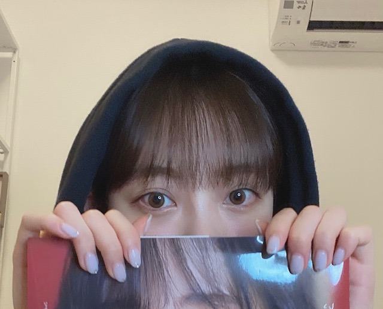
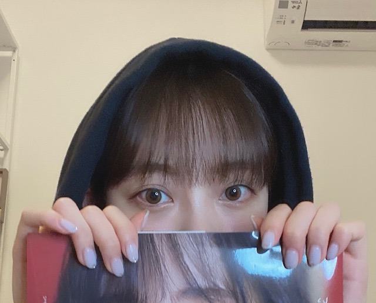

2020/0530Satなんてことない話
最近ね、葛藤してて
自撮りしたり
写真撮られたり
まあほぼ毎日カメラと向き合う仕事じゃないですか
なんかね、やっぱり真夏さんにも指摘されたけど
どうしても変顔したり
ふざけたくなってしまうんですよ
衝動なんです
でもそれがこう世の中に出回って
堀未央奈さんってこういうお顔なのねと
認知されたらちょっと困るじゃないですか
ええ、私は困るんですよ
堀未央奈と検索して画像一覧ほぼ変顔
とかになってしまったらそれが通常の堀未央奈
として世界へ...
どうしましょうね...
どうしましょうというか
でもやっぱり私は今はアイドルなので。
きめるときは、きめないとって思います。
そんな独り言でした
すいません
どんな私でも好きと言ってくださる皆さんには
感謝しかないです


では、ちょっと寝ますね
なんか上にあげたらアイマスクにもなったので
一石二鳥な感じです
すやすや眠れます
では
最近ね、葛藤してて
自撮りしたり
写真撮られたり
まあほぼ毎日カメラと向き合う仕事じゃないですか
なんかね、やっぱり真夏さんにも指摘されたけど
どうしても変顔したり
ふざけたくなってしまうんですよ
衝動なんです
でもそれがこう世の中に出回って
堀未央奈さんってこういうお顔なのねと
認知されたらちょっと困るじゃないですか
ええ、私は困るんですよ
堀未央奈と検索して画像一覧ほぼ変顔
とかになってしまったらそれが通常の堀未央奈
として世界へ...
どうしましょうね...
どうしましょうというか
でもやっぱり私は今はアイドルなので。
きめるときは、きめないとって思います。
そんな独り言でした
すいません
どんな私でも好きと言ってくださる皆さんには
感謝しかないです

では、ちょっと寝ますね
なんか上にあげたらアイマスクにもなったので
一石二鳥な感じです
すやすや眠れます
では
2020/05/30 18:30
コメント(431)
これは難しい問題ですね
とりあえずワタシはみおなちゃんの変顔好きです
とりあえずワタシはみおなちゃんの変顔好きです
好き
写真集買いました。素の堀未央奈が出ていてよかったです。
堀ちゃん変顔でも別に可愛いよ
マスクで顔全部隠れるのは顔がちっちゃいから
マスクで顔全部隠れるのは顔がちっちゃいから
みおなちゃん！
めっちゃ好きだよ！
かわいいし、綺麗だし、オシャレだし、女の子としてすごく憧れてます✨✨
学校の友達に可愛いって言って画像見せまくってたら
音楽番組の次の日とかに
「みおな見つけたよ！」とか
「昨日はポニーテールだったね！」とか
乃木坂のことあまり知らなかった子とかもちゃんと見てくれて嬉しかった
これからも頑張ってください！
応援してます(◍˃̶ᗜ˂̶◍)ﾉ"
めっちゃ好きだよ！
かわいいし、綺麗だし、オシャレだし、女の子としてすごく憧れてます✨✨
学校の友達に可愛いって言って画像見せまくってたら
音楽番組の次の日とかに
「みおな見つけたよ！」とか
「昨日はポニーテールだったね！」とか
乃木坂のことあまり知らなかった子とかもちゃんと見てくれて嬉しかった
これからも頑張ってください！
応援してます(◍˃̶ᗜ˂̶◍)ﾉ"
未央奈ちゃん〜
ずっと応援します！
頑張ってください!

ずっと応援します！
頑張ってください!
未央奈ちゃんは変顔しててもめちゃくちゃ可愛いよー
未央奈さん、こんばんは
乃木坂46の活動に戻ったら
またビシッ！と決めれば
良いのではないでしょうか
変顔も決め顔もバランス良い
頻度だと思いますよ(^_^)
未央奈さんらしさで
いつも通り頑張ってくださいな
乃木坂46の活動に戻ったら
またビシッ！と決めれば
良いのではないでしょうか
変顔も決め顔もバランス良い
頻度だと思いますよ(^_^)
未央奈さんらしさで
いつも通り頑張ってくださいな
みおな こんばんは
いや〜十分綺麗になりましたよ
変顔も有りで
いろんな顔があっていいのかなと
いや〜十分綺麗になりましたよ
変顔も有りで
いろんな顔があっていいのかなと
どんな未央奈でも、未央奈は未央奈なんだから好きなのは当然だよ^_^
飾らない未央奈が好きだからさ*\(^o^)/*
飾らない未央奈が好きだからさ*\(^o^)/*
未央ちゃんブログ更新有り難うございます。未央ちゃん顔小さいね。変顔でも全然素敵ですよ。
未央ちゃん応援してます。
未央ちゃん応援してます。
こんばんは
未央奈さんのモバメで送ってくれている自取り写真も好きですよ、毎回楽しみにしていますよ。
あとshowroomで写真集購入しました。
特典のポスターと共に来るのが楽しみです。
これからも頑張ってください。
応援しています。
未央奈さんのモバメで送ってくれている自取り写真も好きですよ、毎回楽しみにしていますよ。
あとshowroomで写真集購入しました。
特典のポスターと共に来るのが楽しみです。
これからも頑張ってください。
応援しています。
ブログ更新ありがとうございます。普通どころか、健康に毎日生きてくれているだけで、嬉しいですよ。
未央奈！
変顔未央奈、俺は好きだよ。
無理して変える必要はないと思うけど…
どうしても変えたいなら、可愛く撮る時と変顔して遊ぶ時を分ければいいんでないかな？
そしたら、どっちの未央奈もみれるし、俺は嬉しい！
ま、無理して変える必要はないよ！
未央奈は未央奈だから！
ありのままの未央奈でいてください。ずっと応援してます。
ではでは
変顔未央奈、俺は好きだよ。
無理して変える必要はないと思うけど…
どうしても変えたいなら、可愛く撮る時と変顔して遊ぶ時を分ければいいんでないかな？
そしたら、どっちの未央奈もみれるし、俺は嬉しい！
ま、無理して変える必要はないよ！
未央奈は未央奈だから！
ありのままの未央奈でいてください。ずっと応援してます。
ではでは
結構面白い人だね
文才もあるし
ちょっと好きになったわw
文才もあるし
ちょっと好きになったわw
未央奈お疲れ様(*´∀｀)ノ未央奈の変顔は若月さんがやっていた箸君のコントの時の顔東京ドームライブでの変顔は観て可愛いって思ったし逆に乃木坂のメンバーでも人気があり中心的メンバーの子がこんな事迄やるんだなと親近感わくし人気も出るなと思ったよいかにも人気アイドルで近寄りがたい子よりは全然良いと思うよ変顔も未央奈の長所にすれば良いと思うよ(笑)色んな未央奈を見せれば良いと
いつもおもしろい未央奈が大好きです！
未央奈のポニーテールみたいな。
未央奈のポニーテールみたいな。
未央奈ブログ更新ありがとー！
乃木撮に未央奈の写真のコメントの所にまなったんがそう書いてたの思い出した笑
でも変顔とかしてても可愛いくて大好き！
顔全部隠れちゃったらアイマスクじゃないじゃん！笑
フェイスマスクになっちゃう！笑
じゃゆっくり休んでね笑
ではは
乃木撮に未央奈の写真のコメントの所にまなったんがそう書いてたの思い出した笑
でも変顔とかしてても可愛いくて大好き！
顔全部隠れちゃったらアイマスクじゃないじゃん！笑
フェイスマスクになっちゃう！笑
じゃゆっくり休んでね笑
ではは
未央奈さま ご苦労様です、ありがとうございます。
たまには変顔イイじゃないですか。
前の変顔も結局可愛さが勝ってましたし。
それにインスタでＴｉｋＴｏｋ使って変顔やってた
じゃないですか。（笑）
結構笑いました、けどやっぱり可愛いかったです。
とても愛嬌があって好きですよ。結局カワイイし（笑）
清楚な未央奈もイイですが、親しみやすい未央奈は
もっとイイです。
爆笑している未央奈、お茶目な顔の未央奈、ふざけて
いる未央奈、まだまだ素の姿の未央奈を見たいです。
プティ君とじゃれて笑っている未央奈、怒っている
未央奈・・・
思いっ切り汗だくで運動して楽しんだ後の笑顔の未央奈
きいちゃんやみり愛とふざけ合っている時の変顔未央奈
ＴＶやライブで未央奈のアイドル性は健在ですよ。
まぁ、未央奈が考えている変顔がどの領域まで行くのか
分からないので軽々しくも言えないですが・・・（笑）
美人さんが少々外れても親しみが沸くだけで、好感度が
上がっても少々の事では崩れませんよ。
いっそ、もっともっと同性からも好かれるんじゃない？
貴女は美しいのに、最初からとても変な変わった子
なんだから（笑）
でも、そこがイイ・・・チャームポイントなんですから
美しくだけじゃない、ギャップ萌えなんです。
あまり無理をしないでね。
ブログ更新が負担になって疲れてしまわない様に。
それでは、また
たまには変顔イイじゃないですか。
前の変顔も結局可愛さが勝ってましたし。
それにインスタでＴｉｋＴｏｋ使って変顔やってた
じゃないですか。（笑）
結構笑いました、けどやっぱり可愛いかったです。
とても愛嬌があって好きですよ。結局カワイイし（笑）
清楚な未央奈もイイですが、親しみやすい未央奈は
もっとイイです。
爆笑している未央奈、お茶目な顔の未央奈、ふざけて
いる未央奈、まだまだ素の姿の未央奈を見たいです。
プティ君とじゃれて笑っている未央奈、怒っている
未央奈・・・
思いっ切り汗だくで運動して楽しんだ後の笑顔の未央奈
きいちゃんやみり愛とふざけ合っている時の変顔未央奈
ＴＶやライブで未央奈のアイドル性は健在ですよ。
まぁ、未央奈が考えている変顔がどの領域まで行くのか
分からないので軽々しくも言えないですが・・・（笑）
美人さんが少々外れても親しみが沸くだけで、好感度が
上がっても少々の事では崩れませんよ。
いっそ、もっともっと同性からも好かれるんじゃない？
貴女は美しいのに、最初からとても変な変わった子
なんだから（笑）
でも、そこがイイ・・・チャームポイントなんですから
美しくだけじゃない、ギャップ萌えなんです。
あまり無理をしないでね。
ブログ更新が負担になって疲れてしまわない様に。
それでは、また
更新ありがとう〜！！
どんな未央奈でも大好きだよ！！
変顔もやめないでね笑笑
おやすみ
では
どんな未央奈でも大好きだよ！！
変顔もやめないでね笑笑
おやすみ
では
未央奈ちゃん♥
毎日、ブログの更新、モバメ、ありがとう❗❗
「Premiam Music」観ました。
懐かしい映像で、未央奈の自然な表情、メチャよかったなー。♥
いろいろ行動したり、考えたりする未央奈の姿勢、素晴らしいなー。♥
たまには、早くおやすみください。
毎日、ブログの更新、モバメ、ありがとう❗❗
「Premiam Music」観ました。
懐かしい映像で、未央奈の自然な表情、メチャよかったなー。♥
いろいろ行動したり、考えたりする未央奈の姿勢、素晴らしいなー。♥
たまには、早くおやすみください。
自分は変顔している堀ちゃんも大好きですよd(>∇<；)
特に｢無理かも～｣って言ってた時の顔はとても面白かったです(* >ω<)
特に｢無理かも～｣って言ってた時の顔はとても面白かったです(* >ω<)
ブログ更新ありがとう！
俺は勿論どんな未央奈でも好きですよ！
変顔してても可愛いと思うからそのままでも良いと思うけどな〜
変顔してたらそういうイメージついちゃうかもしれないけど、それが未央奈らしさだからやめる必要はないと思うし、ありのままの姿を出していけば良いのかなと思います！(上からですいません…)
これからも頑張ってください！応援してます！
俺は勿論どんな未央奈でも好きですよ！
変顔してても可愛いと思うからそのままでも良いと思うけどな〜
変顔してたらそういうイメージついちゃうかもしれないけど、それが未央奈らしさだからやめる必要はないと思うし、ありのままの姿を出していけば良いのかなと思います！(上からですいません…)
これからも頑張ってください！応援してます！
堀さん
口内炎には乳酸菌をとるといいですよ
口内炎には乳酸菌をとるといいですよ
こんばんは。
今夜も天気の子観ました。
劇場で2回観ましたが胸は熱くなったけど、なのに連夜涙してます。
小さな命がまた再入院しました。
薬が効かなければ覚悟が必要です、と言われました。
信じたいです。
今夜も天気の子観ました。
劇場で2回観ましたが胸は熱くなったけど、なのに連夜涙してます。
小さな命がまた再入院しました。
薬が効かなければ覚悟が必要です、と言われました。
信じたいです。
堀さん今日もお綺麗です！
どんなところも全て含めた未央奈が好きだよ！
どんなところも全て含めた未央奈が好きだよ！
未央奈ー、写真集見ました-ー。
とてもかわいく撮れてますね。
ところどころに素顔も見られて、とても新鮮です。
日々お疲れだと思いますが、未央奈の笑顔を楽しみにしていますので、がんばってねー。
とてもかわいく撮れてますね。
ところどころに素顔も見られて、とても新鮮です。
日々お疲れだと思いますが、未央奈の笑顔を楽しみにしていますので、がんばってねー。
ブログありがとう！
未央奈ちゃんは未央奈ちゃんらしく！
そんな未央奈ちゃんのことが大好きです！
最近、写真集ばっか見てます！本当に可愛いです♡
未央奈ちゃんは未央奈ちゃんらしく！
そんな未央奈ちゃんのことが大好きです！
最近、写真集ばっか見てます！本当に可愛いです♡
未央奈ちゃん、前からずっと好きです
写真集はまだ買ってないけど、買いたいと思ってます！
毎日ブログ更新ありがとう
写真集はまだ買ってないけど、買いたいと思ってます！
毎日ブログ更新ありがとう
未央奈ちゃんかわいい～
❤❤❤❤❤❤❤❤❤❤❤❤❤❤❤❤❤❤❤❤❤❤❤❤❤❤❤❤❤❤❤❤❤❤❤❤❤❤
❤❤❤❤❤❤❤❤❤❤❤❤❤❤❤❤❤❤❤❤❤❤❤❤❤❤❤❤❤❤❤❤❤❤❤❤❤❤
ブログ更新ありがとう。どんな未央奈ちゃんでも可愛いよ。これからも頑張ってください。ずっと応援しています。ファイト。コロナが終息したら握手会で会いましょう。次回のブログ更新楽しみにしています。
キャラも大事よ？(笑)
キメるのはグラビアのときだけでええと思う。
楽しませてもらってます(^^)
キメるのはグラビアのときだけでええと思う。
楽しませてもらってます(^^)
未央奈ブログ更新ありがとう！ 変顔でも全然大丈夫ですよ。僕は、未央奈のすべてが好きです。今から寝るのですね。お疲れ様です。ゆっくり休んでくださいね。では、またねっ！
未央奈～ こんにちは
ブログ更新ありがとうございます。
新写真発売ということで、怒涛の一週間でしたが、無事に終わりましたね。おつかれさまでした。
先日、NHKのテレビ見ていたら、夕方の地域番組に現在、朝ドラで活躍中の松井玲奈さんが出演されていました。名古屋制作の番組で、地元の豊橋が舞台ということで、「ちくわ」が話題になっていました。そしてエピソードを語る中、ひたすら「アジのフライ」を食べるシーンがあったと出てきました。そう、「アジフライ」と言えば、「別れ際、もっと好きになる」MVのオムさん、思い出しました。今も鮮明の覚えていますよ。「マナステ‥‥」。
玲奈さんが乃木坂に兼任になる前から可愛がってもらっていた未央奈ですが、今もお会いしたりしているんですか？ 乃木坂の枠を超えての未央奈の人脈の原点みたいなものですから‥‥。
あの時の未央奈もかわいかったなぁ～。
ブログ更新ありがとうございます。
新写真発売ということで、怒涛の一週間でしたが、無事に終わりましたね。おつかれさまでした。
先日、NHKのテレビ見ていたら、夕方の地域番組に現在、朝ドラで活躍中の松井玲奈さんが出演されていました。名古屋制作の番組で、地元の豊橋が舞台ということで、「ちくわ」が話題になっていました。そしてエピソードを語る中、ひたすら「アジのフライ」を食べるシーンがあったと出てきました。そう、「アジフライ」と言えば、「別れ際、もっと好きになる」MVのオムさん、思い出しました。今も鮮明の覚えていますよ。「マナステ‥‥」。
玲奈さんが乃木坂に兼任になる前から可愛がってもらっていた未央奈ですが、今もお会いしたりしているんですか？ 乃木坂の枠を超えての未央奈の人脈の原点みたいなものですから‥‥。
あの時の未央奈もかわいかったなぁ～。
色んな未央奈見れて嬉しいよ！
未央奈ブログ更新ありがとう！
自分がやりたいようにする事ってすごく大事だと思う！
それも未央奈の良さだと思うし変顔とか色々
やってくれるところ大好きだよ！
ってかその前にめっちゃ可愛いから大丈夫！(^^)
あ！今度握手会でやってもらお〜！
ありのままの未央奈は本当に素敵で輝いてると思う！
そこも未央奈の魅力の一つだよ！(^^)
今日も更新ありがとう！
次のブログも楽しみに待ってるね！
自分がやりたいようにする事ってすごく大事だと思う！
それも未央奈の良さだと思うし変顔とか色々
やってくれるところ大好きだよ！
ってかその前にめっちゃ可愛いから大丈夫！(^^)
あ！今度握手会でやってもらお〜！
ありのままの未央奈は本当に素敵で輝いてると思う！
そこも未央奈の魅力の一つだよ！(^^)
今日も更新ありがとう！
次のブログも楽しみに待ってるね！
こんばんは！
ブログ更新ありがとうございます
変顔も普通の顔も未央奈ちゃんは未央奈ちゃんですから、ありのままで良いと思いますよ☺️
どちらも可愛いしね✨
これからも、体調に気を付けて頑張ってくださいね
応援してます❗
ブログ更新ありがとうございます
変顔も普通の顔も未央奈ちゃんは未央奈ちゃんですから、ありのままで良いと思いますよ☺️
どちらも可愛いしね✨
これからも、体調に気を付けて頑張ってくださいね
応援してます❗
未央奈～
キリっとした表情の時も
変顔してる時も
ライブで熱いパフォーマンスしてる時も
メンバーを想って涙してる時も
どの未央奈も気持ちに嘘がなくて
まっすぐで素敵で好きですよ
キリっとした表情の時も
変顔してる時も
ライブで熱いパフォーマンスしてる時も
メンバーを想って涙してる時も
どの未央奈も気持ちに嘘がなくて
まっすぐで素敵で好きですよ
堀さんは何にでもなれます。毎日カメラを向けられるのは大変ですね。もう、ありのままに～の心境で。
未央奈さんは変顔もできるけどしっかりキメれてるアイドルだと思います 変顔したい衝動はわかりますw
変顔したい衝動はわかりますw
たまには変顔も良いと思いますよ
未央奈ちゃんの美意識の高さや、スタイル維持や将来的な目標などに影響されて、ずっとやってなかったダンスやランニングなどやる気が出て最近頑張れてますw すごく良い影響受けたのでありがとうございます 頻繁にブログ更新ありがとう
頻繁にブログ更新ありがとう
たまには変顔も良いと思いますよ
未央奈ちゃんの美意識の高さや、スタイル維持や将来的な目標などに影響されて、ずっとやってなかったダンスやランニングなどやる気が出て最近頑張れてますw すごく良い影響受けたのでありがとうございます
個人日記を読んでいるのかなと錯覚させられるブログ…
新感覚でいいっす。www
堀ちゃんのボヤキなら一生聞ける。いくらでも聞いていたい。
変顔を堂々とできるのは素敵です。そして変顔なのにかわいい…世の中には面白い不思議なことがまだ5万とあると思いました。
でも、堀ちゃんの変顔は私たちを笑顔にしてくれるしかわいいし、元の顔なんてその何億倍もかわいいことは周知なことなので、これからも変顔で笑わせてください！
どちらもかわいいけど変顔のかわいさと写真集のようなかわいさとの緩急が男にはたまらないです。
明るくて面白いけどかわいい女の子なんて最高にも程がありますよ！！www
惚れてまうやろぉぉぉぉ
堀ちゃんのやりたいことをすればファンは必然的に『かわいい』と思うのです。
堀ちゃんらしさ全開でこれからも突き進んでくださーい。
新感覚でいいっす。www
堀ちゃんのボヤキなら一生聞ける。いくらでも聞いていたい。
変顔を堂々とできるのは素敵です。そして変顔なのにかわいい…世の中には面白い不思議なことがまだ5万とあると思いました。
でも、堀ちゃんの変顔は私たちを笑顔にしてくれるしかわいいし、元の顔なんてその何億倍もかわいいことは周知なことなので、これからも変顔で笑わせてください！
どちらもかわいいけど変顔のかわいさと写真集のようなかわいさとの緩急が男にはたまらないです。
明るくて面白いけどかわいい女の子なんて最高にも程がありますよ！！www
惚れてまうやろぉぉぉぉ
堀ちゃんのやりたいことをすればファンは必然的に『かわいい』と思うのです。
堀ちゃんらしさ全開でこれからも突き進んでくださーい。
あら なんてことない話？むむむ。
葛藤っていうスタートだったから
ちょっと身構えたけど衝動と変顔の話かー！
大事な話だね。(真剣な話だけどちょっとニヤニヤしちゃう系の話じゃん)☺︎
そうだよねー、衝動ってなかなか抑えられないし、自分の気持ちを捻じ曲げることになるもんね。うーむ。
エゴサしたら画像一覧ほぼ変顔かぁ。
そりゃたしかに初めて知る人からしたらこういうお顔の人なのね。ってなるわ。笑
でも、よーーく考えてみると、
こっちがみおちゃんのファンになったのってライブの変顔スタートなんよねー笑
ライブでみた、そんバカ？のあとの変顔。
みおちゃんの変顔ってなんか魅力的なんよねー笑
そういう変顔からファンになる変な人もいるから変顔やめないで。ね。(笑)
そうだね。アイドルだから衝動を押し込めてきめるときは、きめないとね。
うん！どんなみおちゃんも好きよ〜♡
(ニヤニヤしながら)
かわい！素敵な写真集ありがとね〜(^-^)
ちょ、ちょ、ちょ。
すーぐボケるやん。コケそうになったわ。
ボケる衝動つよし！！お顔がみてみたいわ。
かわいい写真みれたしこっちも寝よっと♪
おやすみ〜芸人のポコ未央奈さん☺️
葛藤っていうスタートだったから
ちょっと身構えたけど衝動と変顔の話かー！
大事な話だね。(真剣な話だけどちょっとニヤニヤしちゃう系の話じゃん)☺︎
そうだよねー、衝動ってなかなか抑えられないし、自分の気持ちを捻じ曲げることになるもんね。うーむ。
エゴサしたら画像一覧ほぼ変顔かぁ。
そりゃたしかに初めて知る人からしたらこういうお顔の人なのね。ってなるわ。笑
でも、よーーく考えてみると、
こっちがみおちゃんのファンになったのってライブの変顔スタートなんよねー笑
ライブでみた、そんバカ？のあとの変顔。
みおちゃんの変顔ってなんか魅力的なんよねー笑
そういう変顔からファンになる変な人もいるから変顔やめないで。ね。(笑)
そうだね。アイドルだから衝動を押し込めてきめるときは、きめないとね。
うん！どんなみおちゃんも好きよ〜♡
(ニヤニヤしながら)
かわい！素敵な写真集ありがとね〜(^-^)
ちょ、ちょ、ちょ。
すーぐボケるやん。コケそうになったわ。
ボケる衝動つよし！！お顔がみてみたいわ。
かわいい写真みれたしこっちも寝よっと♪
おやすみ〜芸人のポコ未央奈さん☺️
ブログ更新ありがとう
未央奈の変顔好きです！！特にはしくんが好きです！
どんな未央奈でも大好きなので変顔はまた見たいです！
マスクをアイマスクにするのはナイスアイディアですね！
やっぱり頭良い❗️
未央奈の変顔好きです！！特にはしくんが好きです！
どんな未央奈でも大好きなので変顔はまた見たいです！
マスクをアイマスクにするのはナイスアイディアですね！
やっぱり頭良い❗️
こういう文章も良い。
安心して！「堀未央奈」で検索してもあんまり変顔出てこなかったよ！あんまりね！
そういうおちゃめなところに魅力を感じた人も多いし、自信もってください！
そういうおちゃめなところに魅力を感じた人も多いし、自信もってください！
変顔もかわいすぎるから大丈夫すぎる。
でも未央奈の笑顔は天下取れる。
でも未央奈の笑顔は天下取れる。
未央奈〜！！
ブログ更新ありがとう
めっっっっちゃ元気出た！
写真集の感想書くから待っててね！
次の更新も待ってるね〜！！
ブログ更新ありがとう
めっっっっちゃ元気出た！
写真集の感想書くから待っててね！
次の更新も待ってるね〜！！
変顔の未央奈でも応援します！！
可愛すぎます！！
可愛すぎます！！
ほぼ毎日更新ありがとうございます。
未央奈さん頑張りすぎって思うけれど
感謝しまくってます。
口内炎早く治りますように。
未央奈さん頑張りすぎって思うけれど
感謝しまくってます。
口内炎早く治りますように。


なんてことなくない、アイドルの未央奈としての大事な悩みだよね。
いろいろ今後に関わってくるだろうしね。
俺は変顔を衝動的にやってしまうのは良さだと思う！
そのお茶目な部分と今回の写真集みたいな可愛さや美しくさとのギャップが魅力的だし、どっちの面も持ってるってすごい良いなって思うよ！
画像検索して変顔が多く出て来たら未央奈が困るのは確かに分かる。
俺も良いと思わないし嫌だな。
でも、乃木坂入ってデビューして7周年たって今までの変顔とか出てるのを見られちゃうのはしょうがないし。
むしろ検索した結果、変顔の未央奈も可愛いくて綺麗な未央奈も見つけて良いじゃん！ってなってくれる人が増えるのに期待して前向き考えてほしいな！
ちなみにね、Googleで「堀未央奈 画像」って検索させてもらったら。可愛い画像しか出てこなかったよ。まじで！
関連キーワードで出てきたのも、逃走中、昔、さる、バレッタ、ロング、鈴木絢音、ブログ、横顔。だった。
変顔に関係してる画像やキーワードは全然だったよ！
そりゃ、わざわざ探せばいろいろ変顔みたいなのも出てくるだろうけどね。とりあえず堀未央奈で画像検索しても可愛い未央奈の画像ばっかりってことで！(*^^*)
それでも未央奈が気になって考えちゃうなら少しだけ意識して、きめるときをきめるのを気をつけるくらいで良いんじゃないかなー。
ブログ更新ありがとー！このことで考えてたら朝５時になっちゃったのかなw
マスクをそのままアイマスクにできちゃうとか未央奈が顔小さいからやw
飛鳥ちゃんだけの技じゃなくなったね(゜ー゜)(。_。)